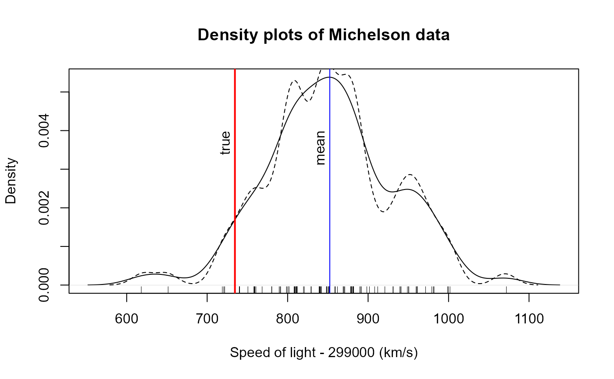
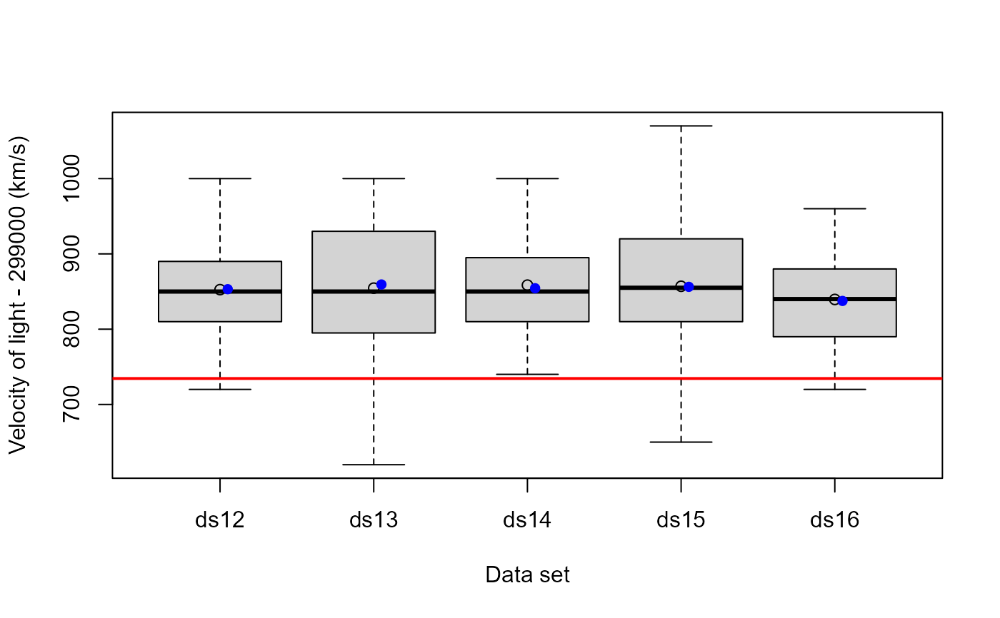

The data frame Michelson gives Albert Michelson's measurements of the
velocity of light in air, made from June 5 to July 2, 1879, reported in
Michelson (1882). The given values + 299,000 are Michelson's measurements
in km/sec. The number of cases is 100 and the "true" value on this scale is
734.5.
Stigler (1977) used these data to illustrate properties of robust estimators
with real, historical data. For this purpose, he divided the 100
measurements into 5 sets of 20 each. These are contained in
MichelsonSets.
Format
Michelson: A data frame with 100 observations on the
following variable, given in time order of data collection
velocitya numeric vector
MichelsonSets: A 20 x 5 matrix, with format
int [1:20, 1:5] 850 850 1000 810 960 800 830 830 880 720 ...
- attr(*, "dimnames")=List of 2
..$ : NULL
..$ : chr [1:5] "ds12" "ds13" "ds14" "ds15" ...#'
Source
Originally from Kyle Siegrist, "Virtual Laboratories in Probability and Statistics", link no longer works.
Stephen M. Stigler (1977), "Do robust estimators work with real data?", Annals of Statistics, 5, 1055-1098
Details
The "true" value is taken to be 734.5, arrived at by taking the "true" speed of light in a vacuum to be 299,792.5 km/sec, and adjusting for the velocity in air.
The data values are recorded in order, and so may also be taken as a time series.
References
Michelson, A. A. (1882). "Experimental determination of the velocity of light made at the United States Naval Academy, Anapolis". Astronomical Papers, 1, 109-145, U. S. Nautical Almanac Office.
See also
morley for these data in another format
Examples
data(Michelson)
# density plot (default bandwidth & 0.6 * bw)
plot(density(Michelson$velocity), xlab="Speed of light - 299000 (km/s)",
main="Density plots of Michelson data")
lines(density(Michelson$velocity, adjust=0.6), lty=2)
rug(jitter(Michelson$velocity))
abline(v=mean(Michelson$velocity), col="blue")
abline(v=734.5, col="red", lwd=2)
text(mean(Michelson$velocity), .004, "mean", srt=90, pos=2)
text(734.5, .004, "true", srt=90, pos=2)

# index / time series plot
plot(Michelson$velocity, type="b")
abline(h=734.5, col="red", lwd=2)
lines(lowess(Michelson$velocity), col="blue", lwd=2)
# examine lag=1 differences
plot(diff(Michelson$velocity), type="b")
lines(lowess(diff(Michelson$velocity)), col="blue", lwd=2)
# examine different data sets
boxplot(MichelsonSets, ylab="Velocity of light - 299000 (km/s)", xlab="Data set")
abline(h=734.5, col="red", lwd=2)
# means and trimmed means
(mn <-apply(MichelsonSets, 2, mean))
#> ds12 ds13 ds14 ds15 ds16
#> 852.5 854.5 858.5 857.0 839.5
(tm <- apply(MichelsonSets, 2, mean, trim=.1))
#> ds12 ds13 ds14 ds15 ds16
#> 853.125 859.375 854.375 856.250 837.500
points(1:5, mn)
points(1:5+.05, tm, pch=16, col="blue")
